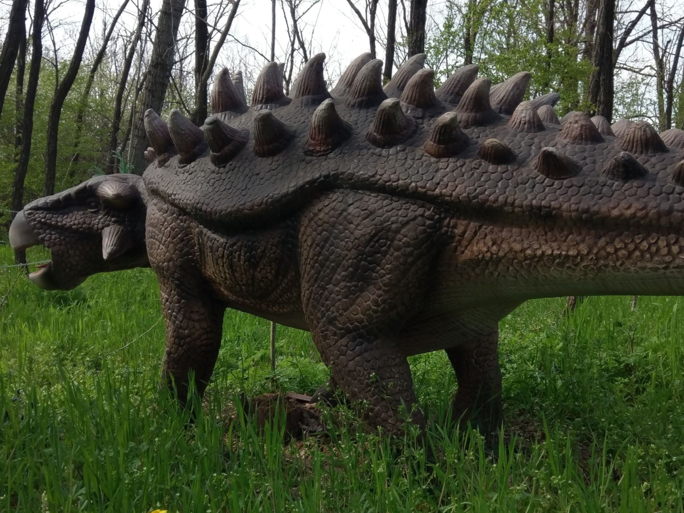
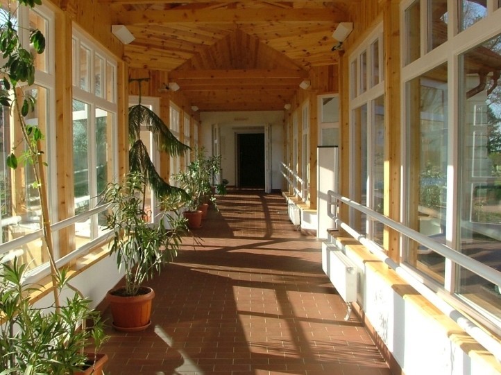
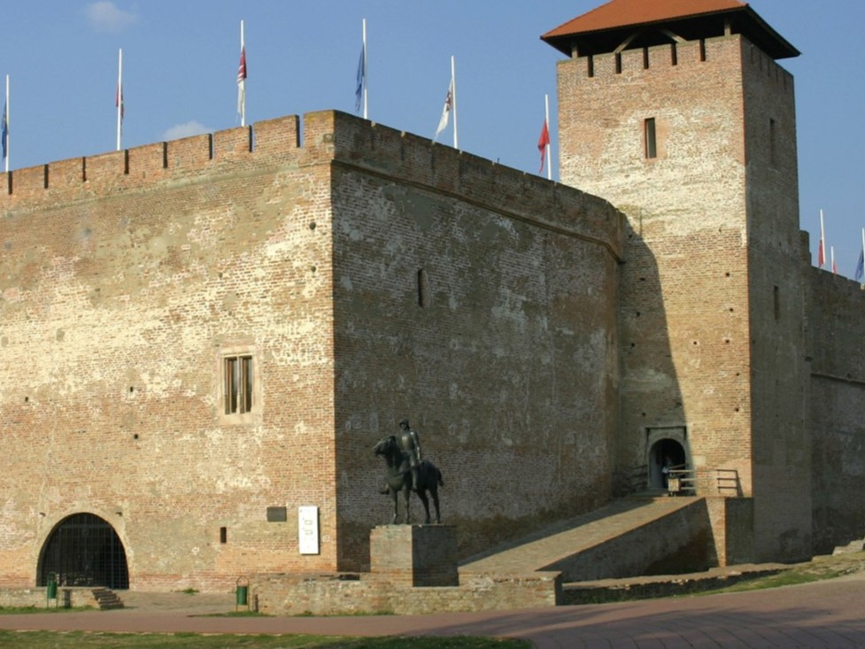
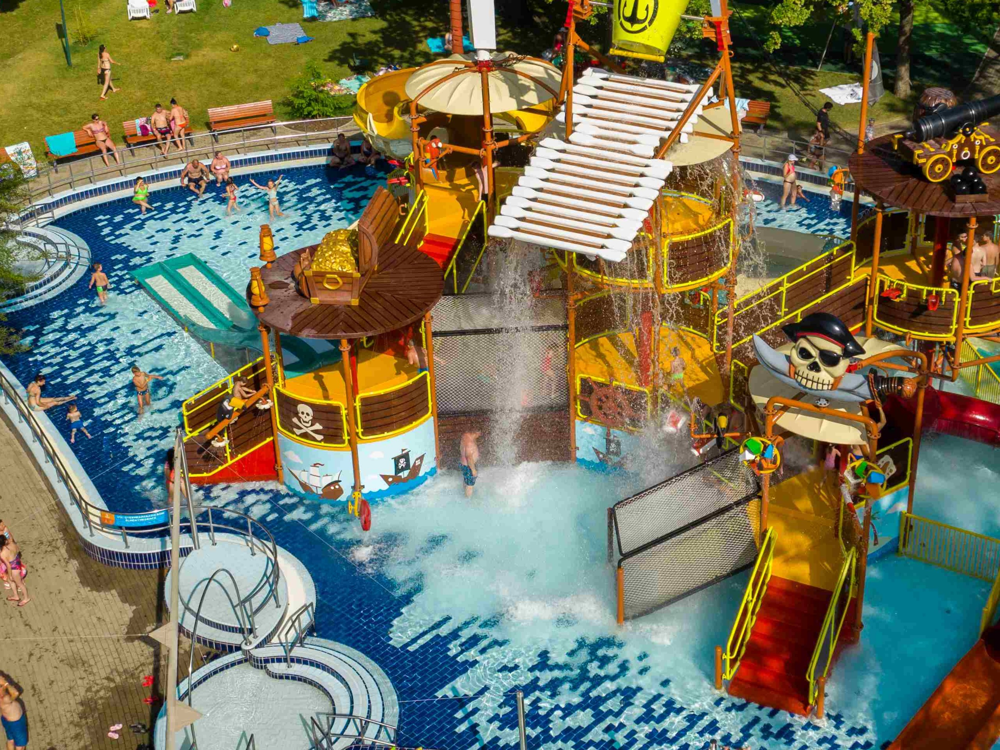
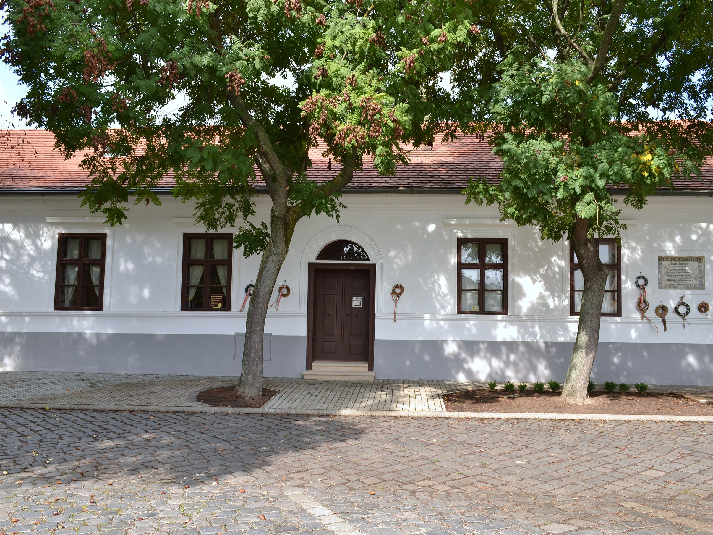
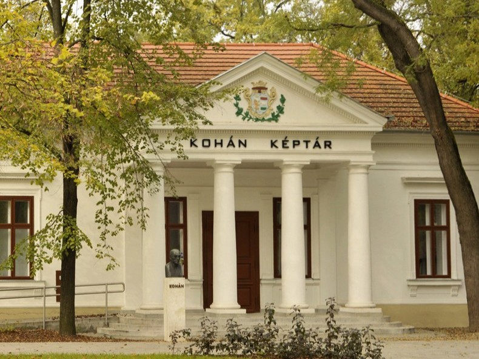
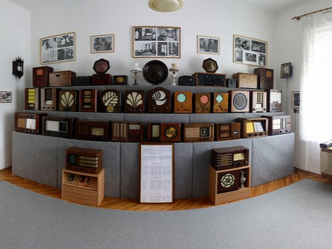
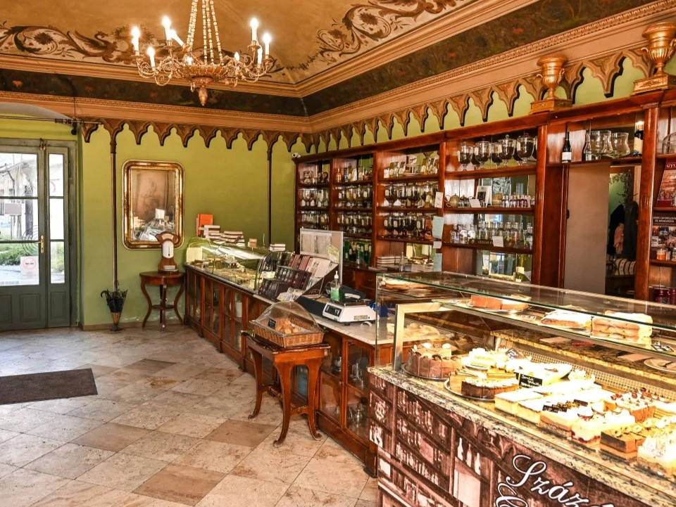
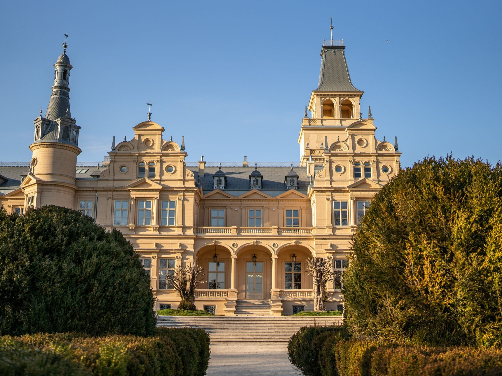
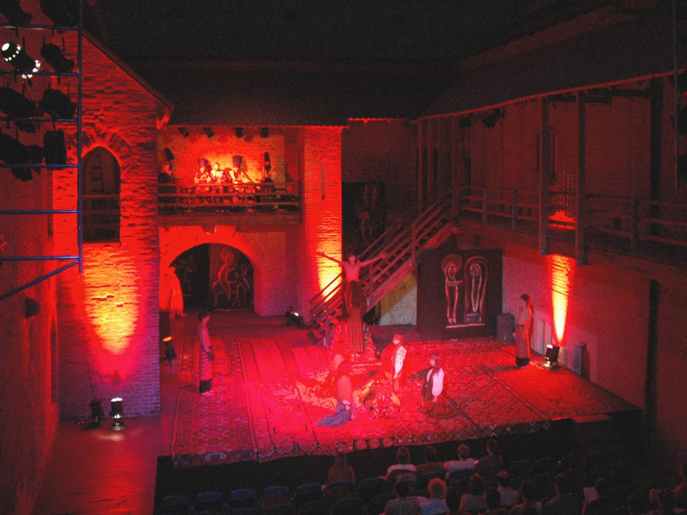

Gyulai Dinó Park
A látogatóknak különös kalandban lehet részük, hiszen testközelből láthatják a régi idők sárkányai. A dínókaland után számos szabadtéri játék várja a kedves látogatókat a park udvarán. A játékok használatát a belépőjegy ára tartalmazza. Vízi dodgem, csontkereső ásatás és berg gokartok gondoskodnak róla, hogy Dínó Parkban eltöltött idő emlékezetes maradjon.
További info

Ladics-Ház
A földszintes polgárház a 19. század elején épült barokk stílusban, jegyzői lakásként. A házba dr. Ladics György jogász feleségével ifjú házasként költözött, majd utódai itt éltek a múzeummá alakításig. A hagyományőrző családban öt generáción át megmaradtak az életmódjukat tükröző bútorok, tárgyak, öltözékek s a szellemi életükről tanúskodó emlékek.
További info

Gyulavári Kastély
Három nagy területet ölel át a kastély: hagyományok, kultúra és fenntartható fejlődés. Az állandó kiállítás bemutatja Gyula és környéke kézműves és népművészeti hagyományait, értékeit. Például a békési szűcshímzést, a kalotaszegi írásos kézimunkát, valamint a kézzel szőtt gyapjú- és pamut szőnyegek világába kalauzol bennünket.
További info

Gyulai vár
A XV. században épült, mára a középkori Magyar Királyság egyetlen épen maradt síkvidéki téglavára, melynek 24 kiállítótermében közel hét évszázad történetét járhatják végig a látogatók. A kilátóból gyönyörű panoráma nyílik a városra. Építése Maróti János macsói bánhoz, továbbépítése pedig Corvin János nevéhez fűződik.
További info

Gyulai Várfürdő
A Gyulai Várfürdő 5 500 m2-nyi vízfelülettel és összesen 23 medencével büszkélkedhet. Legújabb nagyberuházása révén az AquaPalotával gazdagodott a Gyulai Várfürdő, így egész évben kiszolgálhatja a családokat, a fiatalokat és azokat, akik elsősorban nem a gyógyvíz miatt látogatnak el a fürdőbe.
További info

Erkel Ferenc Emlékház
A németgyulai tanítói lakást 1795-ben építették fel. 1821-ben egy újabb tanterem került az ekkor megnagyobbított mellé. A kántor és iskolaház az 1830-as átalakításkor kapta klasszicista stílusát. Az Erkel család 1806-ban érkezett Gyulára. Erkel József 1841-ig lakott és tanított az iskolában.
További info

Almásy-kastély
Az elmúlt évszázadokat szinte ugyanúgy határozták meg ezek az ellentett-párok, mint napjainkat. És mégis, hiába jártuk végig Magyarország, sőt Európa kastélyait, semmit sem tudhattunk meg a színfalak mögötti világról, arról, mely nélkül a pompa és ragyogás azonnal kihunyt volna, egészen eddig!
További info

Kohán Képtár
Békés megye első múzeumépülete volt az 1895-re elkészült képtár, amely ma a Kohán-hagyaték otthona. 1952-1975 között a dór oszlopos, timpanonos bejáratú neoklasszicista épület a város művelődési otthona volt, majd 1979-ben a Kohán-hagyaték kapott helyet az épületben.
További info

Rádiótörténeti kiállítás
Különleges és ritkaságnak számító kiállítási anyagot tekinthetnek meg azon érdeklődők, akik felkeresik a Rádiótörténeti kiállítást. A muzeális tárgyak a kezdeteket idézik. Megtekinthetik a háború előtti magyar ipar EKA, Orion, Philips, Standard, Telefunken és Telefongyár készülékeit.
További info

Százéves Cukrászda
Az 1840 óta üzemelő Százéves Cukrászda Magyarország második legrégebbi cukrászdája. Csodás, empír stílusú épületében a díszesen festett falak között, eredeti biedermeier bútorzat, s hagyományos sütemény, parfé-, cukorka- és fagylaltkínálat repíti vissza a látogatót az egykori nyüzsgő kávéházi világba.
További info

Wenckheim-kastély
A Nemzeti Kastélyprogramban és a Nemzeti Várprogramban értékmegőrzés történik tartós megoldásokkal. Rendkívül fontosnak tartjuk azt, hogy ne csak az épületek helyreállítása, hanem az újjászületése valósuljon meg, ne csak a fizikai, hanem a szellemi rehabilitációjukra is sor kerüljön.
További info

Gyulai Várszínház
A Gyulai Várszínház országunk a legrégebbi magyar várszínháza. Kelet-Közép-Európa egyetlen épen maradt síkvidéki, több mint 600 éves gótikus téglavárának udvarán, a csodálatos panorámájú tószínpadon, a felújított kamaraszínházában, a város más helyszínein, utcáin és terein várja közönségét.
További info